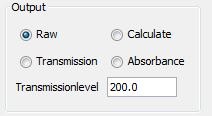

Output

- Raw: The signal is displayed as recieved
- Calculate: [darkline - signal ] / highlevel
- Transmittance: 100 * [darkline - signal] / [darkline - baseline]
This is calculated if signal or baseline is greater then 100 [on the ToDo list]
- Absorbance: log10( [darkline - baseline] / [darkline - signal])
Here is room for improvement I think.